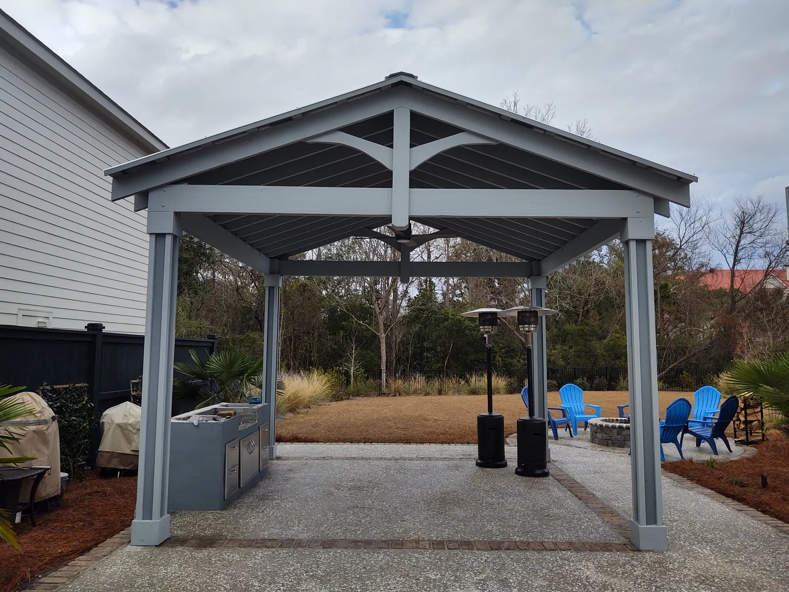
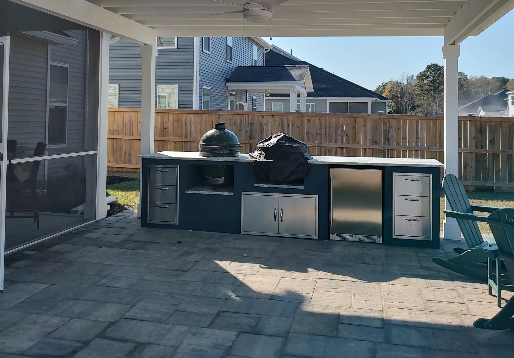
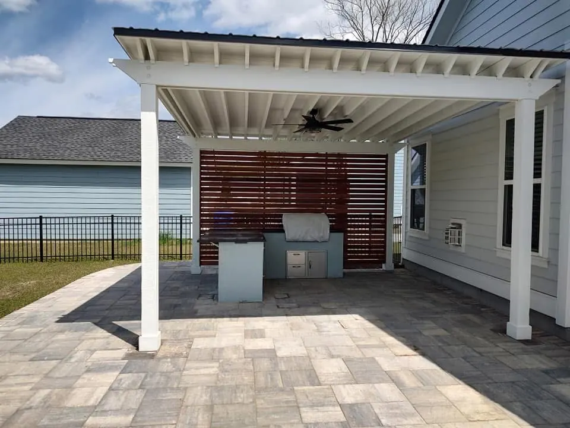
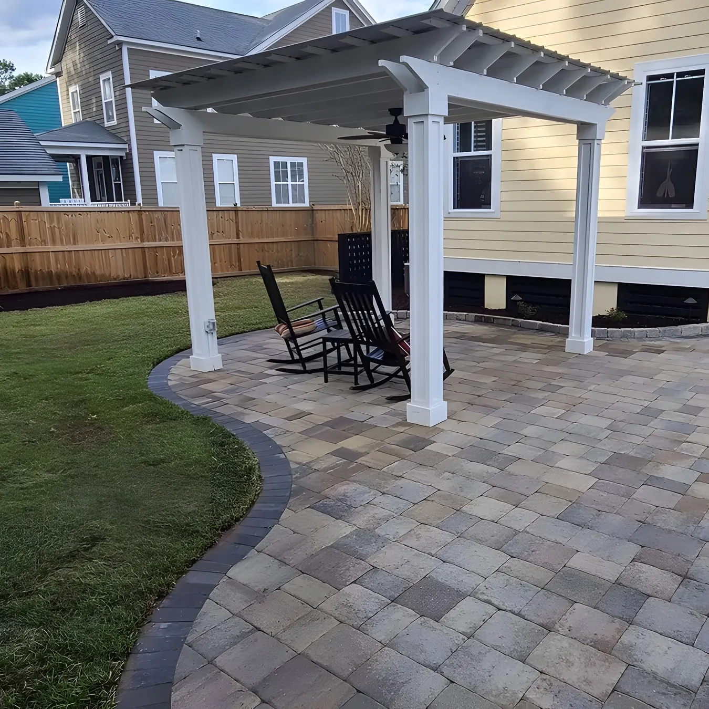

Outdoor Living & Landscaping on Daniel Island, SC

Local & Family-Run
Daniel Island Pergolas, Pavilions and Outdoor Kitchens
Cramers Landscaping is a family company. Doug Cramer has worked in landscaping his whole life, with more than 30 years of experience, and his son Zach is our licensed residential builder. We design each structure ourselves and build it with our own crew, including the gas, electrical and plumbing.
On Daniel Island most of our work has been outdoor structures: a gable pavilion, two pergolas over full kitchens, and two simpler pergolas. All five are below.
A Gable Pavilion With a Kitchen

A gable frame gives this pavilion its shape, with a full kitchen underneath. The floor is tabby concrete with a brick border. The kitchen is fitted with stainless cabinets and a glass countertop, and the pavilion is wired with a ceiling fan and outlets.
A pavilion has a solid, watertight roof, so it stays usable in a summer storm. Pavilions run $30,000 to $90,000 or more. At $30,000 it is small and bare bones, and trim, a ceiling, electrical and a kitchen are what take it up.
Two Pergolas, Two Kitchens


A white pergola with a sapele privacy wall
The second is a similar white pergola over a stucco kitchen, this one with a black leathered granite counter, a grill, a bar top, a fridge, cabinets and a sink. What sets it apart is the slatted sapele accent wall behind it, which gives the owners privacy and looks good doing it.
Both have ceiling fans and outlets. Under any roof we recommend a range hood over the grill, because smoke and grease rise and collect on the ceiling. Where a hood isn’t possible, a ceiling fan plus an extra fan does the job.
Simpler Pergolas Work Too

Not every structure needs a kitchen. One Daniel Island client chose a fairly simple covered pergola: a metal roof, some additional post trim and a ceiling fan. Another chose a basic open pergola with a seating wall beside it.

A simple pergola is around $10,000: no post and beam trim, no ceiling, maybe no roof. Trim, a ceiling, a roof and electrical take it toward $30,000. A pergola is the least expensive of pergola, pavilion and gazebo, which is why most clients choose one.
Building on Daniel Island
Daniel Island is a planned community, and the property owners’ association has an Architectural Review Board. It reviews changes to the outside of a property, including landscaping, fences and walls, pools and tree removal, and the association says a review can take up to 15 business days once everything has been submitted. That is on top of the City of Charleston building permit, which we pull ourselves. We can prepare and submit the review application for you as well.
Lots on Daniel Island tend to be compact, so the space has to work hard. A pergola or pavilion with an outdoor kitchen under it turns a patio into a room. A fire pit wants to sit off the corner of the patio rather than in the middle, so it doesn’t cut the space in half.
Around the structure, planting does the screening. Hedges are a better answer than a taller fence, because they read as landscape. Artificial turf suits a narrow side yard, and lighting and irrigation finish the job.
What the Daniel Island Guidelines Say
Daniel Island’s design guidelines are detailed, and a few rules come up on almost every project:
- Review: major items go to the board, which meets twice a month, and the rest are handled by staff. Once approved, work has to start within 90 days and finish within 180. A pool application needs landscape, grading and drainage plans from a licensed landscape architect.
- Fences are smooth cedar, cypress, redwood, pressure-treated pine or wrought iron, painted white, Charleston green, black or the house trim color. Vinyl is not allowed. Pool fences can also be black, dark bronze or forest green aluminum.
- Irrigation is required, and so is sod on unplanted areas. Centipede is the preferred grass, with St. Augustine and hybrid Bermuda acceptable.
- Lighting should be subtle, with no glare and hooded floodlights. In Daniel Island Park, spotlights on the house are not permitted and tree uplights are preferred.
- Trees of 8 inches or more need approval to remove, and the guidelines call for tree-protection fencing at the drip line during construction.
- Smythe Park actively encourages outdoor rooms: arbors, pergolas, pavilions and cabanas, in materials like painted wood, brick, wrought iron, stucco and tabby.
Rules as published when we checked in 2026. Guidelines change, and the board or town always has the final say, so we confirm the current rules for your property before a design is final.
Every Service We Offer, Available On Daniel Island
The projects on this page are only part of what we do. We offer all of our services on Daniel Island, designed by Doug and Zach and built by our own crew. From the first site visit to the final walkthrough, here’s how a project works.
- Landscaping: landscape design and installation, plants and trees, sod, artificial turf, irrigation, drainage and grading, landscape lighting, mulch and bed edging, fountains and water features
- Hardscaping: patios and pavers, concrete and driveways, retaining walls, fire pits, pool decks
- Outdoor Structures: pergolas, pavilions, outdoor kitchens, outdoor fireplaces, outdoor showers
Worth knowing before you start
- Patios and pavers: Patios start around $18 per square foot. Marble, travertine or bluestone mortar-set on a concrete slab is the premium option at $30 or more. Ten by ten is the smallest patio we would recommend. A fire pit needs more, because you need room to pull chairs back. The base is the whole job. Our best method is mortar-set pavers on a solid concrete base.
- Plants and trees: Plant beds run $1,000 to $2,000, a front yard $5,000 to $10,000, and a full house landscape $20,000 or more in plants. For low maintenance we plant evergreens, use ground cover to keep weeds out, and space everything for its mature size.
- Irrigation: About $1,000 a zone. An average lot needs about five zones, plus $1,500 for the backflow preventer and timer. Pots and containers want their own zone, because they dry out far faster than beds.
- Fire pits: A fire pit kit is about $1,000, and custom masonry starts from $2,500. We put it off the corner of the patio rather than in the middle, with about six feet of clearance so chairs can pull back.
Small jobs are welcome too. There’s no minimum job size.
What Projects Typically Cost
| Pergola | $10,000 – $30,000 |
|---|---|
| Pavilion | $30,000 – $90,000+ |
| Outdoor kitchen | $8,000 – $20,000+ |
| Paver patio | around $18 per sq ft |
Ranges are typical, not quotes. Size, materials, site conditions and finishes move the number. You’ll get an exact price after the consultation.
Frequently Asked Questions
What is the difference between the pergolas and the pavilion on this page?
The pavilion has a full gable frame and roof. The pergolas are simpler structures, some open and some covered with a metal roof. Pergolas run $10,000 to $30,000 and pavilions $30,000 to $90,000 or more. Trim, a ceiling, a roof, electrical and a kitchen underneath are what move the price.
Can you put a ceiling fan and outlets in a pergola?
Yes. All three of the Daniel Island kitchen structures on this page have ceiling fans and outlets. We run the electrical ourselves, along with gas and plumbing.
What countertop do you recommend for an outdoor kitchen?
Granite holds up best outdoors, and black leathered granite is one of our most popular options. It is on one of the Daniel Island kitchens here. One client chose a glass countertop instead.
Do I need a permit for a pergola or pavilion on Daniel Island?
Roofed structures usually need a building permit, and we pull it ourselves as part of the build. Allow four to six weeks for permitting. If your neighborhood has a review, we can prepare and submit that application as well.
Talk to Doug or Zach About Your Yard
Tell us what you have in mind for your Daniel Island property, and we’ll set up a consultation at your home.
This site is protected by reCAPTCHA. Google’s Privacy Policy and Terms of Service apply.